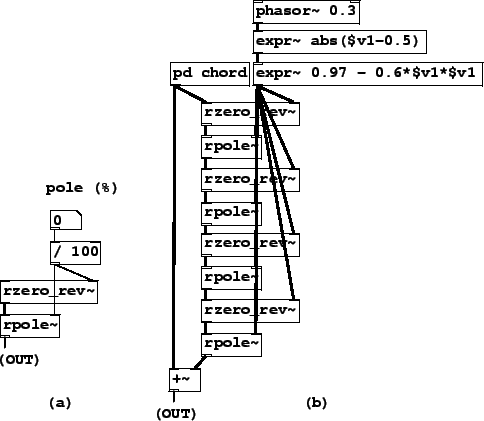

|  |
Example H14.all.pass.pd (Figure 8.33, part a) shows how to make an all-pass filter out of a non-recirculating filter, second form (rzero_rev~) and a recirculating filter (rpole~). The coefficient, ranging from -1 to 1, is controlled in hundredths.
Example H15.phaser.pd (part b of the figure) shows how to use four all-pass filters to make a classic phaser. The phaser works by summing the input signal with a phase-altered version of it, making interference effects. The amount of phase change is varied in time by varying the (shared) coefficient of the all-pass filters. The overall effect is somewhat similar to a flanger (time-varying comb filter) but the phaser does not impose a pitch as the comb filter does.